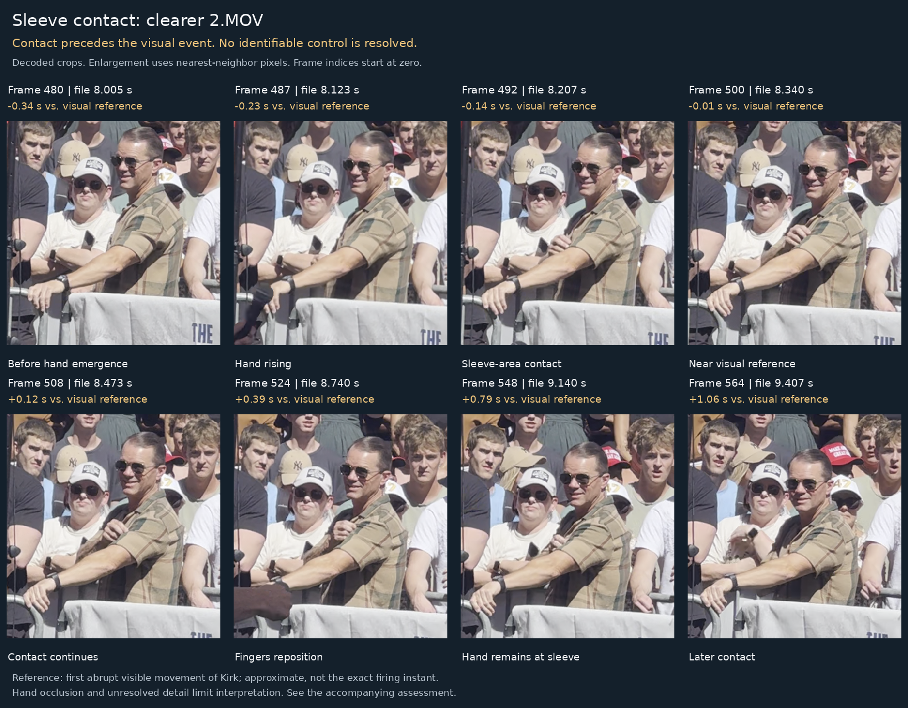
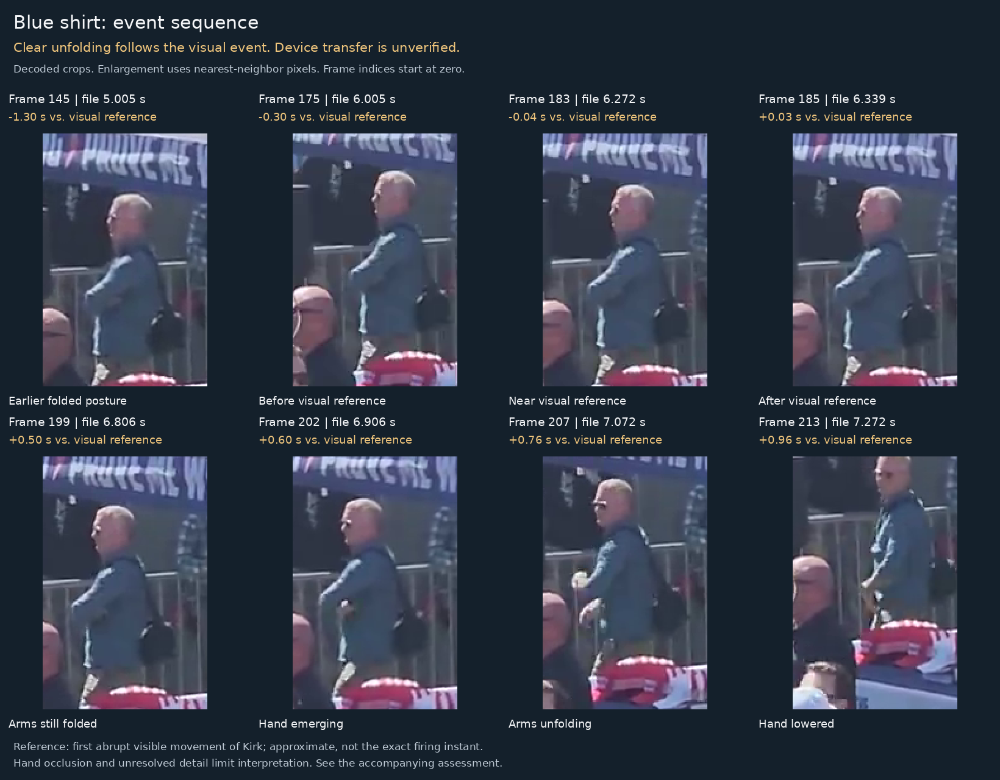
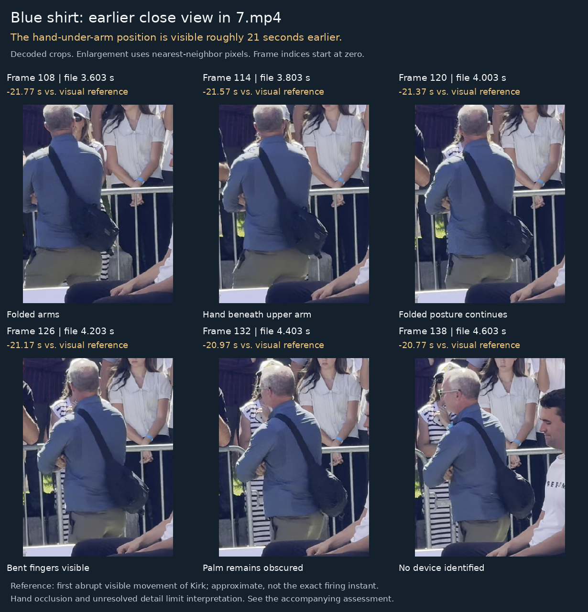

Where the two studies agree, and where they part
The review below was made independently of study 01 by ChatGPT Astra, from the same files. It reaches the same conclusions about what the frames resolve: a hand on a sleeve, an arm that unfolds, no identifiable control, no object followed into a pocket. On the order of events it was right first.
The review does not use the sound of the shot. It sets its zero at "the first clear abrupt visible movement of Kirk" in each file, chosen by eye: 8.35 s in 2.MOV, 6.31 s in 16.mp4, 25.37 s in 7.mp4. Study 01, in its first version, anchored on the loudest audio transient in each file, which in 2.MOV is a crowd burst at 6.42 s, and on that basis faulted this review's zero as 1.9 s late. That was study 01's error, not the review's. Cross-correlating the clips' audio and reading Kirk's head frame by frame put the shot in 2.MOV at frame 520, 8.67 s, 0.3 s after the review's marker; in 16.mp4 at frame 193, 6.61 s, also 0.3 s after; in 7.mp4 at frame 770, 25.67 s, 0.3 s after. The review's three markers are each about 0.3 s early, consistently, which suggests it bracketed the first small movement rather than the head snap; the order it reports is unaffected.
With study 01's V2 zero, the sleeve contact the review documents at frames 487–492 falls 0.45 to 0.55 s before Kirk's head snaps back, and the unfolding it documents at frames 199–202 of 16.mp4 falls 0.2 to 0.3 s after. The two studies now agree on every frame number and on the order. The review's package, boards and slowed clips are kept here unchanged. An earlier version of this note, which said the review had placed its zero 1.9 s late, is withdrawn; it is preserved in the repository history and described on study 01's correction section.
Kirk footage: movement and timing
Reproduced from the package's findings and report. Headings, figures and the timing table are the review's own; nothing has been reworded.
The sleeve contact starts before Kirk's visible reaction. The available footage does not establish a hidden control, a separate pre-event squeeze, or an object being put away.
This is an exploratory visual review of specific files. It does not authenticate the recordings, identify the men, establish their employment, or determine criminal involvement. The conclusions below are manual visual judgments, not results from a trained action-detection model or a blinded study.
How to read the times. Zero means the first clear abrupt visible movement of Kirk in each file. It is approximately located and is not the exact firing or impact instant. Decimal timestamps locate frames; they do not establish millisecond accuracy in the physical event.
The sleeve contact: the pre-event contact is visible in the clearer source
The supplied kirk1.mp4 displays at 270 × 480 pixels. The matching scene and sequence in 2.MOV displays at 1080 × 1920 after rotation, supplying substantially more actual spatial detail. Both files contain 2,204 decoded frames, although their presentation timestamps are not identical. Matching content and metadata do not alone authenticate a camera original or prove the exact processing history.
In the clearer view, the man behind the barrier keeps his left arm extended and brings his right hand toward the left upper-arm/sleeve area. The hand becomes visible rising around 8.11–8.16 s; the fingers reach the sleeve area around 8.19–8.24 s. The approximate reference, the first clear abrupt visible movement of Kirk, is around 8.35 s. Contact therefore precedes that reference by roughly 0.1–0.2 seconds. The hand remains at the sleeve area afterward, with the fingers repositioning in later frames.

The timing portion of the observation is supported: the contact is not simply a response to Kirk's already visible reaction. However, the frames do not resolve a button, a recognizable actuator, or a control changing state. They cannot establish that the gesture disguises another action. They also do not prove that it is an innocent scratch. Confirmed contact; unresolved function is the supported finding.
The initial estimate from the small upload was coarser. The final contact window above uses the clearer MOV and supersedes the preliminary estimate. The beginning of an arm movement hidden behind the body or barrier cannot be timed from first hand visibility alone.
The blue-shirted man: the clear unfolding occurs afterward
The supplied kirk2.mp4 shows an already folded-arm posture. The relevant hand is largely hidden by the upper arm and torso. Minor contour changes cannot be identified confidently as squeezing a device: the object, its outline, and any actuator are unresolved.
The visual reference is approximately 6.31 s. Clear unfolding and hand emergence occur around 6.84–6.94 s, approximately 0.5–0.6 seconds afterward. The hand then lowers toward the front/waist around 7.10–7.30 s.

A small bright detail is visible during emergence. It cannot reliably be separated into skin, highlight, cuff/accessory, or an identifiable held item. No object can be followed clearly and continuously from beneath the arm into a pocket or other storage location. Hand lowering is visible; device stowing is unverified. This is not a finding that the hand was empty, nor does post-event unfolding exclude every possible earlier, occluded small movement.
What 7.mp4 adds: the hand-under-arm position appears much earlier
The close portion of 7.mp4 shows bent fingers beneath the folded upper arm around 3.6–4.6 s. Kirk's abrupt visible movement occurs around 25.37 s in this file. Thus, the hand-under-arm position appears roughly 21 seconds earlier, not only immediately before the event.

This reduces the diagnostic value of that posture alone as a last-moment signal. It does not reveal what, if anything, is held in the obscured palm. The camera zooms out before the event, leaving the relevant hand too small or occluded to identify the alleged actuation. The preliminary approximately 19-second estimate was corrected after locating the visible event; an audio transient was not used as the final reference.
Overall judgment: these files establish a pre-event sleeve contact and an already existing folded-arm posture. They do not establish two coordinated device activations. No defensible numerical probability of coordination or involvement follows from this sample.
Checking the work: sources, reproducibility, and limits
| Source | Displayed pixels | Decoded frames | Role in the review |
|---|---|---|---|
| kirk1.mp4 | 270 × 480 | 2,204 | Initial low-resolution sleeve view; superseded for detail by 2.MOV |
| 2.MOV | 1080 × 1920 | 2,204 | Clearer matching scene and sequence; approximately 60 encoded frames/s |
| kirk2.mp4 | 720 × 1280 | 299 | Blue-shirt event sequence; approximately 30 frames/s near the event |
| 7.mp4 | 1920 × 1080 | 1,176 | Earlier close view, followed by a wider event view |
| Source | Observation | Approximate file time | Relation to its own reference |
|---|---|---|---|
| 2.MOV | Right hand becomes visible rising | 8.11–8.16 s | Before |
| 2.MOV | Sleeve-area contact | 8.19–8.24 s | Roughly 0.1–0.2 s before |
| 2.MOV | First clear abrupt visible movement of Kirk | 8.32–8.38 s; marker 8.35 s | Reference |
| 2.MOV | Contact continues; fingers reposition | Examples through 9.4 s | After |
| kirk2.mp4 | First clear abrupt visible movement of Kirk | 6.272–6.339 s; marker 6.31 s | Reference |
| kirk2.mp4 | Clear unfolding/hand emergence | 6.84–6.94 s | Roughly 0.5–0.6 s after |
| kirk2.mp4 | Hand lowered toward front/waist | 7.10–7.30 s | Roughly 0.8–1.0 s after |
| 7.mp4 | Closer view of folded fingers | 3.6–4.6 s | Roughly 21 s before |
| 7.mp4 | First clear abrupt visible movement of Kirk | 25.32–25.42 s; marker 25.37 s | Reference |
The archive directory listing identifies 2.MOV as 69.7M, last modified 28 October 2025 at 01:15, and 7.mp4 as 45.7M, last modified 11 September 2025 at 07:45. These are archive file dates, not proof of capture time or an unbroken chain of custody. Exact sizes, URLs and SHA-256 values are recorded in the package's config/sources.json; no source is accepted by the build if its bytes differ.
What is reproducible. The package preserves exact source hashes, decoded frame timestamps, crop coordinates, selected frame indices, and manual annotation windows. The Python script verifies the inputs and rebuilds all three boards, both slowed clips, and the report page. The visual judgments are explicitly manual; the script does not automatically detect intent or identify devices.
Timing and uncertainty. Per-frame presentation timestamps are used instead of assuming every encoded frame interval is identical. For example, kirk2.mp4 has an approximately 204 ms initial interval, outside the event window. File timing is not authenticated camera timing. These observations do not establish the precise instant of firing, audio synchronization, rolling-shutter timing, or the physical duration between movements. The approach is an exploratory review, not a forensic timing certification; see SWGDE's frame timing guidance.
What would materially improve the inference. An unobstructed view of the blue-shirted man's hand at the event, a visible device with an identifiable function, several minutes of earlier behavior, or independent equipment/communications evidence would help distinguish explanations. More magnification of already occluded or unresolved pixels would not supply that evidence.
Corrections made during the review. The earlier, coarse estimate of the sleeve reach from the low-resolution upload was narrowed using 2.MOV. The preliminary "19 seconds earlier" estimate for the close view in 7.mp4 was corrected to approximately 21 seconds after aligning the visible event. An audio transient was not used as the final event reference.
Prepared from the four named files. No identity recognition, independent witness verification, blinded reviewer study, or statistical gesture-baseline study was performed. Build environment: Python 3.12.14, Pillow 12.3.0, FFmpeg 6.1.1 on Linux x86-64; see the package's report/audit/environment.json. The review's standalone HTML export, with every figure embedded, is kept unchanged at inputs/astra/Kirk_video_review.html.